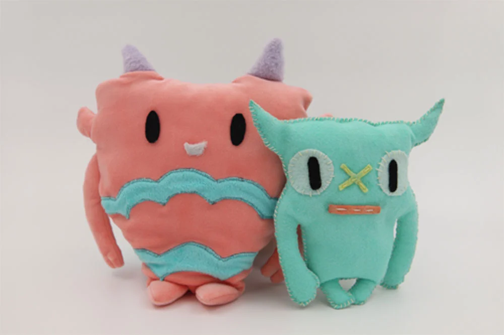
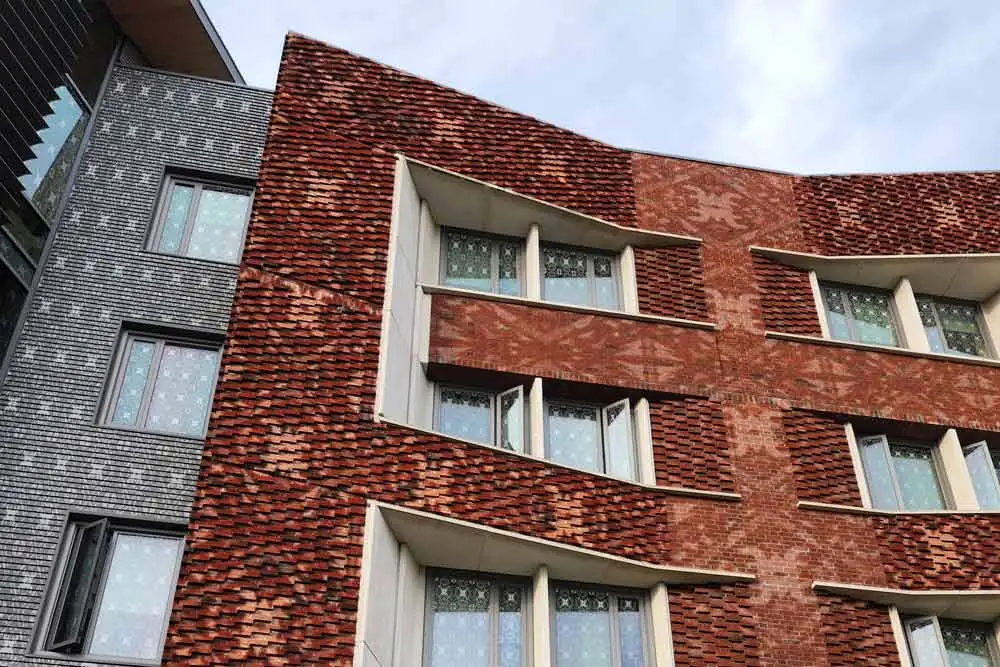
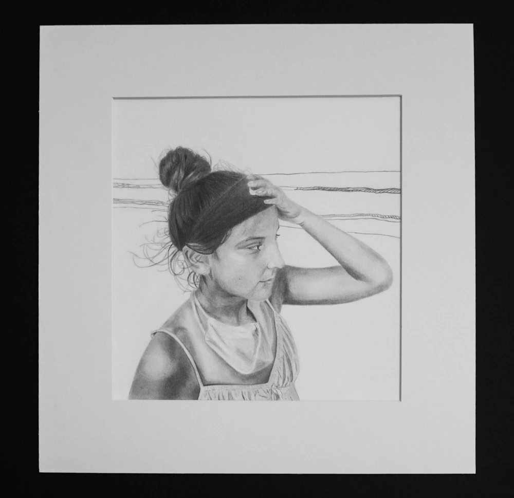
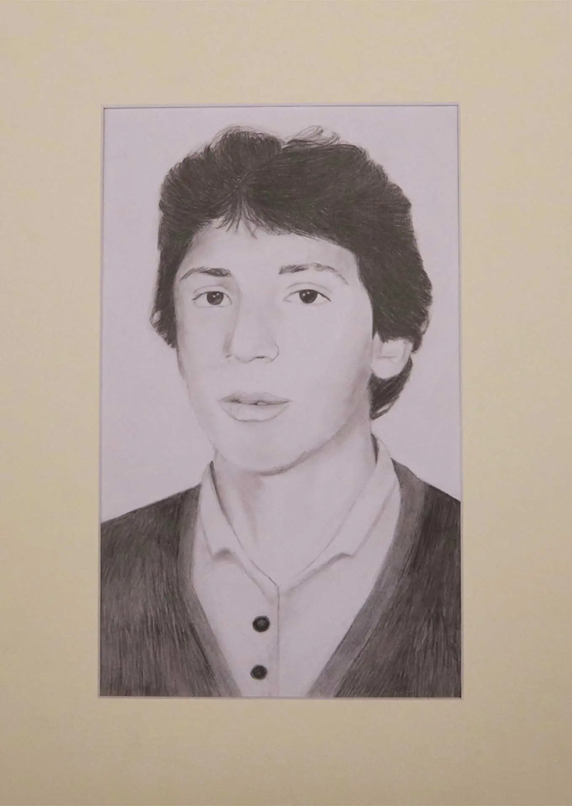
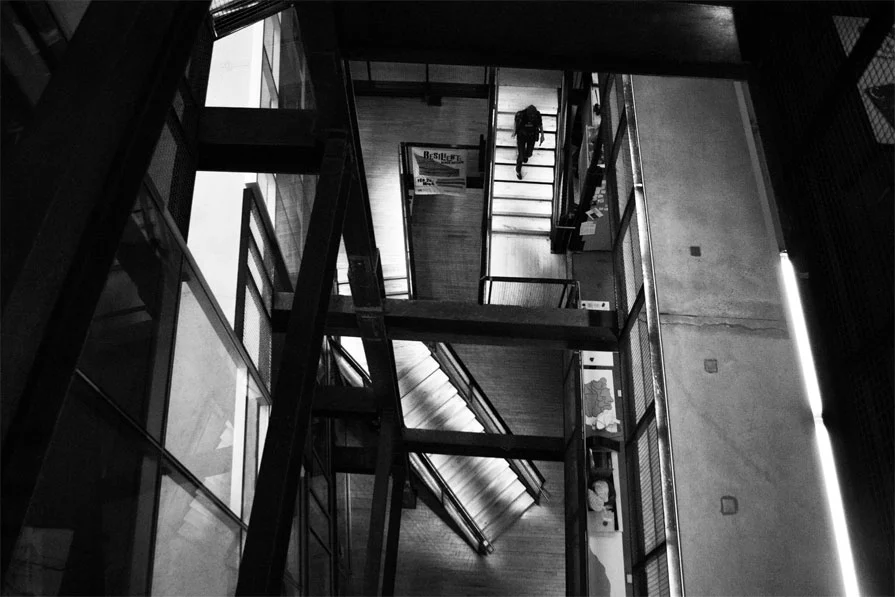
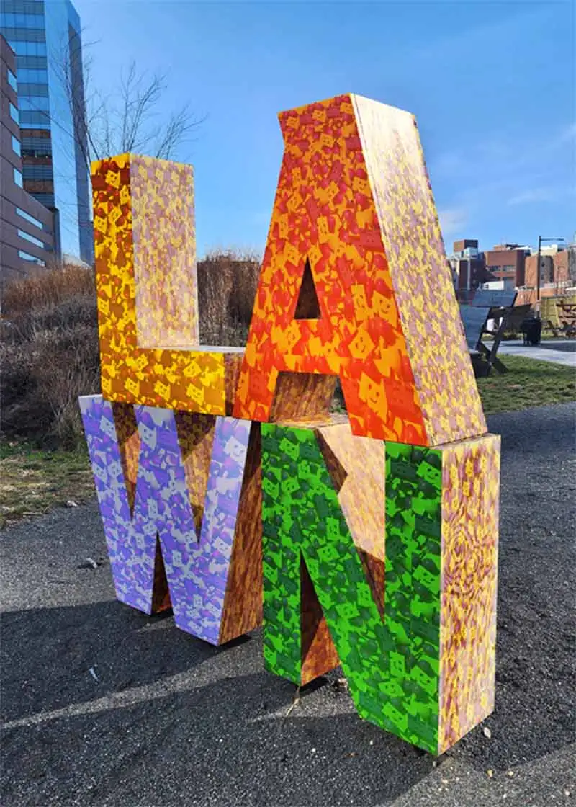

Creative Work
Explore the creative work I have produced through a variety of mediums.
-
 Plush Monsters | 2021 -
 Applying illustrated motifs to a building | 2022 -
 Observational Drawing of My Sister | 2021 -

Self Reflection, Mixed Media | 2021 -

Still Life and Observational Drawing | 2021 -
 Portrait of my Dad as a Student! | 2020 -
 Photograph of URBN Center | 2023 -

Photography showcasing scale | 2022 -

Photography showing a geometric form | 2022 -
 Using Photoshop to apply patterns | 2023